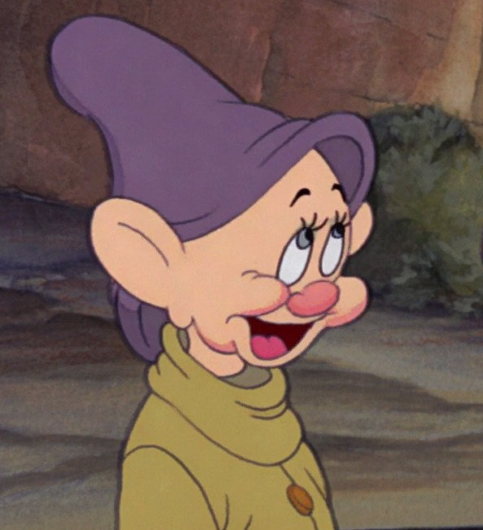
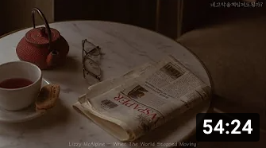

유튜바
1M subscribers
다음 동영상
-
Relaxing Piano Studio Ghibli 【宮崎駿コレクション ピアノとハープ】睡眠と作業 用ジブリ癒し TalesWeaver music 조회수 6천회 * 3년 전
-
 🌲뉴욕의 연말 분위기 크리스마스 캐롤 재즈☃️ 따듯한 감성 보컬 재즈 뚜비뚜밥 조회수 4만회 * 8분 전
🌲뉴욕의 연말 분위기 크리스마스 캐롤 재즈☃️ 따듯한 감성 보컬 재즈 뚜비뚜밥 조회수 4만회 * 8분 전 -

[Playlist] 슬슬 연말 분위기를 내볼까요? | 퍼펙트 크리스마스 캐롤 플레이리스트🎄🎅🎁 | Best Christmas Pop Songs Of All Time 우든체어 Wooden Chair 조회수 10만회 * 4개월 전